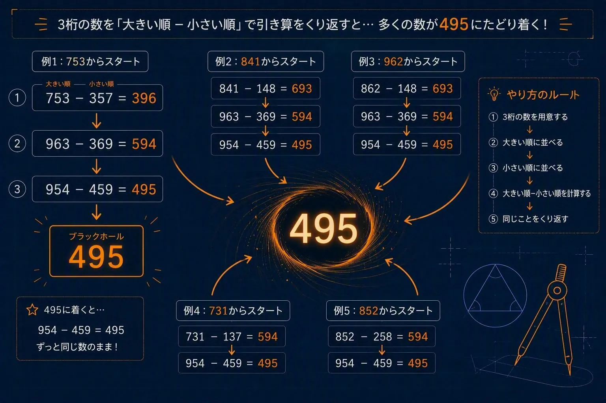

まずは計算してみる
例として「753」を使ってみよう。3つの数字を大きい順と小さい順に並べ、その差を求める。
| 753 − 357 = | 396 |
| 963 − 369 = | 594 |
| 954 − 459 = | 495 |
たった3回の計算で495に到着した。では、別の数から始めても同じことが起こるのだろうか。
電卓を使って、841、731、962などから始めてみよう。毎回、数字を大きい順と小さい順に並べて引き算する。本当に495へ近づくだろうか。

495は数字のブラックホール
495に到着した後も同じ操作をしてみよう。大きい順に並べると954、小さい順に並べると459になる。
| 954 − 459 = | 495 |
答えはまた495になる。そのため、一度495に到着すると、何度繰り返しても495から動かない。
どんな3桁の数でもよいの？
実は条件がある。3つの数字がすべて同じ数、たとえば111や777から始めると、引き算の答えは0になる。そこで、この遊びでは少なくとも2つの異なる数字を含む3桁の数から始める。
また、途中で2桁の答えになったときは、百の位に0があると考える。たとえば99なら099として数字を並べ替える。
「3つの数字がすべて同じではないこと」と、「0も数字として並べること」が大切だ。
どうして495へ集まるのか
この操作は、インドの数学者D・R・カプレカが研究した数の操作として知られている。数字を並べ替えて引くだけなのに、途中で現れる数は自由にばらばらになるのではなく、限られた流れに整理されていく。
3桁の場合、その流れの行き着く先が495になる。高校数学では、3桁の数を文字で表したり、差が9の倍数になることを調べたりすると、この不思議の理由に近づける。
753 → 396 → 594 → 495
495 → 495 → 495 → …
4桁にも有名な数がある
4桁の数で同じ操作をすると、「6174」という有名な数が現れる。3桁の495と同じように、6174も一度到着すると同じ数に戻る。
身の回りとのつながり
電卓さえあれば、誰でもすぐ試せる。友達と違う数から始めて、495までに何回かかるか比べてみよう。計算結果を記録すると、別々の数が途中で同じ道に合流することにも気づけるかもしれない。